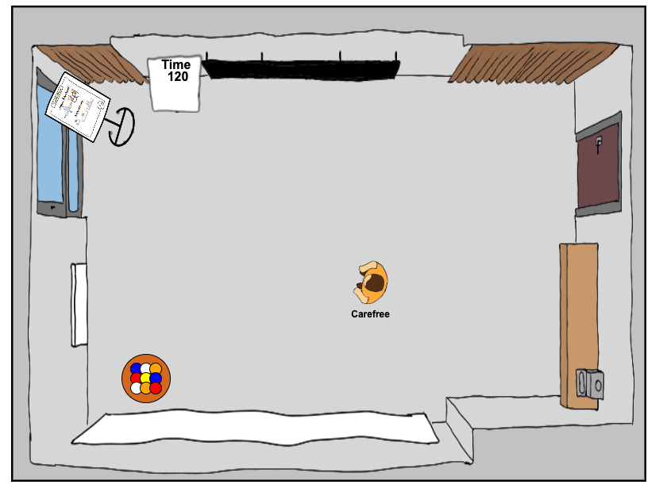

powered by

The Remote Ball Point Game - Trainer Instructions
How to prepare
as a trainer?
The Remote Ball Point Game simply provides the setup as given in trainings: a meeting room,
balls, a timer and flipcharts with some explanations.
As trainer you should be familiar with the original ball point game. If you already facilitated
it in real life then just do it equally in the remote version.As trainer you also should know both control modes so that you can help participants with it. In general people who are into video gaming will have no troubles with the controls. For participants who never played video games it can be a big challenge.

How to prepare
your participants?
It's not necessary to realy prepare your participants. Ideally they don't know anything about the
ball point game because it's part of the game to explore it together and find clever solutions.
However it's important to tell them that they need at least a keyboard to play the game and if they want to try both control modes then also a mouse. Furthermore it's recommended to use a chrome browser.
You also should prepare a video call and send it out in your invitation. If you don't have access to a video call system you can use the room that is created from the Remote Ball Point Game, but then you should point it out in you invitation.
How to create or join
a Game?
If you enter a room name and press the start button the room will be created and you will be
forwarded to it. If a room with the name already exists you will join the room. The number of rooms is limited. So please only open rooms when you really need it! Empty rooms are closed after 40 seconds.
You can also enter rooms directly with the url. Just copy it from your browser and share it.
How to interact
with surroundings?
The picture shows all colliders in the room. You can interact with the following objects by standing
in front of them and using the left or right hand (see controls). - door --> return to the title
- ball table --> take or return balls
- timer --> start or stop the timer
- flipchart --> open the flipchart view
- ball --> take it
How to use
the flipchart and the timer?
When you interact with the flipchart the flipchart view is opened for every participant.
Only the player who has opened the view can flip pages and enter results.
You can close the view by once again interacting with the flipchart. The flipcharts helps you to explain the controls, the game and to save the results of each round.
Similarly you can start and reset the timer.
The Warm Up round
After all participants have entered the room and played around with their avatar you should activate the flipchart to get everyones attention. The first flipchart helps you to explain the controls. The second flipchart shows the steps of the Warm Up round. The goal of the Warm Up is to get familiar with the game. After it everybody should at least know how to move around and throw and catch balls.Use the timer to set a 2 minutes timebox for it but feel free to extend it if not everybody is ready to play the game.
Also encourage the players to switch between the control modes. Explain, that they can return to the title by leaving through the door or refresh the page in the browser. It's important that they know that because later they may switch the color or the name of their avatar.
The Ball Point Game
The goal of the game is that the players create a process to reach as many points as possible in 2 minutes. A point is scored when a ball is touched by every player. Balls that are on the ground when the time is over are counted as bugs (negative points).The exercise contains 3 phases that are repeated 5 times:
- preparation --> invent or improve the process (2 Minutes)
- estimation --> estimate how many points are scored
- play time --> use the process to score points (2 Minutes)

How to use
the result table?
The result table shows 3 columns for each round:
- estimation --> the estimation of the round
- actual result --> the result of the round
- bugs --> the balls that are on the ground after the round
Note that the game does not count the points! It's part of the process to figure out how to count. You may or may not point that out before the first round... better not, they should learn by themselves ;)
How to do the reflection?
In most cases you will use the Remote Ball Point Game to teach basic concepts of agility. (self-organization, iterative work, continuous improvement) To connect the just experienced with the theory you should ask some questions:- What did you experience?
- Would you have gotten more points if you played one round with 10 minutes preparation?
- What would have happened if one person was in charge of the process?
- Why did the points drop / rise in round X?
Feel free to
change the game!!
Don't be afraid to change rules and objectives. You can add some rules to spice things up or disturb
the players to show what happens when the flow is interrupted... Be creative and share your
experience
under the hashtag #remoteballpointgame ... and literally ... CHANGE THE GAME ... it's open Source ;)
https://github.com/openforce/remoteballpointgame